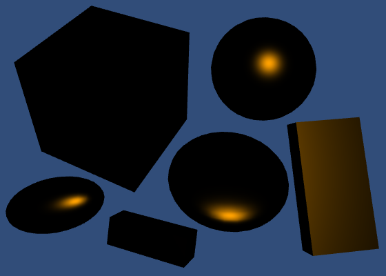

Rendering 4
The First Light
- Transform normals from object to world space.
- Work with a directional light.
- Compute diffuse and specular reflections.
- Enforce energy conservation.
- Use a metallic workflow.
- Take advantage of Unity's PBS algorithms.
This is the fourth part of a tutorial series about rendering. The previous part was about combining textures. This time we'll look at how to compute lighting.
This tutorials was made using Unity 5.4.0b17.
Normals
We can see things, because our eyes can detect electromagnetic radiation. Individual quanta of light are known as photons. We can see a part of the electromagnetic spectrum, which is know to us as visible light. The rest of the spectrum is invisible to us.
A light source emits light. Some of this light hits objects. Some of this light bounces off the object. If that light then ends up hitting our eyes – or the camera lens – then we see the object.
To work this all out, we have to know our object's surface. We already know its position, but not its orientation. For that, we need the surface normal vectors.
Using Mesh Normals
Duplicate our first shader, and use that as our first lighting shader. Create a material with this shader and assign it to some cubes and spheres in the scene. Give the objects different rotations and scales, some non-uniform, to get a varied scene.
Shader "Custom/My First Lighting Shader" {
…
}

Unity's cube and sphere meshes contain vertex normals. We can grab them and pass them straight to the fragment shader.
struct VertexData {
float4 position : POSITION;
float3 normal : NORMAL;
float2 uv : TEXCOORD0;
};
struct Interpolators {
float4 position : SV_POSITION;
float2 uv : TEXCOORD0;
float3 normal : TEXCOORD1;
};
Interpolators MyVertexProgram (VertexData v) {
Interpolators i;
i.uv = TRANSFORM_TEX(v.uv, _MainTex);
i.position = mul(UNITY_MATRIX_MVP, v.position);
i.normal = v.normal;
return i;
}
Now we can visualize the normals in our shader.
float4 MyFragmentProgram (Interpolators i) : SV_TARGET {
return float4(i.normal * 0.5 + 0.5, 1);
}
These are the raw normals, directly from the mesh. The faces of the cubes appear flat, because each face is a separate quad with four vertices. The normals of these vertices all point in the same direction. In contrast, the vertex normals of the spheres all point in different directions, resulting in a smooth interpolation.
Dynamic Batching
There is something strange going on with the cube normals. We'd expect each cube to show the same colors, but this is not the case. Even weirder, the cubes can change color, depending on how we look at them.
This is caused by dynamic batching. Unity dynamically merges small meshes together, to reduce draw calls. The meshes of the spheres are too large for this, so they aren't affected. But the cubes are fair game.
To merge meshes, they have to be converted from their local space to world space. Whether and how objects are batched depends, among other things, on how they are sorted for rendering. As this conversion affects the normals as well, this is why we see the colors change.
If you want to, you can switch dynamic batching off via the player settings.

Besides dynamic batching, Unity can also do static batching. This works differently for static geometry, but also involves a conversion to world space. It happens at build time.
While you need to be aware of dynamic batching, it's nothing to be worried about. In fact, we have to do the same thing for our normals. So you can leave it enabled.
Normals in World Space
Except for dynamically batched objects, all our normals are in object space. But we have to know the surface orientation in world space. So we have to transform the normals from object to world space. We need the object's transformation matrix for that.
Unity collapses an object's entire transformation hierarchy into a single transformation matrix, just like we did in part 1. We could write this as `O = T_1 T_2 T_3 …` where `T` are the individual transformations and `O` is the combined transformation. This matrix is known as the object-to-world matrix.
Unity makes this matrix available in shaders via a float4x4 unity_ObjectToWorld variable, which is defined in UnityShaderVariables. Multiply this matrix with the normal in the vertex shader to transform it to world space. And because it's a direction, repositioning should be ignored. So the fourth homogeneous coordinate must be zero.
Interpolators MyVertexProgram (VertexData v) {
Interpolators i;
i.position = mul(UNITY_MATRIX_MVP, v.position);
i.normal = mul(unity_ObjectToWorld, float4(v.normal, 0));
i.uv = TRANSFORM_TEX(v.uv, _MainTex);
return i;
}
Alternatively, we can multiply with only the 3 by 3 part of the matrix. The compiled code ends up the same, because the compilers will eliminate everything that gets multiplied with the constant zero.
i.normal = mul((float3x3)unity_ObjectToWorld, v.normal);

The normals are now in world space, but some appear brighter than others. That's because they got scaled as well. So we have to normalize them after the transformation.
i.normal = mul(unity_ObjectToWorld, float4(v.normal, 0)); i.normal = normalize(i.normal);

While we have normalized vectors again, they look weird for objects that don't have a uniform scale. That's because when a surface gets stretched in one dimension, its normals don't stretch in the same way.
When the scale is not uniform, it should be inverted for the normals. That way the normals will match the shape of the deformed surface, after they've been normalized again. And it doesn't make a difference for uniform scales.

So we have to invert the scale, but the rotation should remain the same. How can we do this?
We described an object's transformation matrix as `O = T_1 T_2 T_3 …` but we can be more specific than that. We know that each step in the hierarchy combines a scaling, rotating, and positioning. So each `T` can be decomposed into `S R P`.
This means that `O = S_1 R_1 P_1 S_2 R_2 P_2 S_3 R_3 P_3 …` but let's just say `O = S_1 R_1 P_1 S_2 R_2 P_2` to keep it short.
Because normals are direction vectors, we don't care about repositioning. So we can shorten it further to `O = S_1 R_1 S_2 R_2` and we only have to consider 3 by 3 matrices.
We want to invert the scaling, but keep the rotations the same. So we want a new matrix `N = S_1^-1 R_1 S_2^-1 R_2`.
Besides the object-to-world matrix, Unity also provides an object's world-to-object matrix. These matrices are indeed inverses of each other. So we also have access to `O^-1 = R_2^-1 S_2^-1 R_1^-1 S_1^-1`.
That gives us the inverse scaling that we need, but also gives us the inverse rotations and a reversed transformation order. Fortunately, we can remove those unwanted effects by transposing the matrix. Then we get `(O^-1)^T = N`.
So let's transpose the world-to-object matrix and multiply that with the vertex normal.
i.normal = mul( transpose((float3x3)unity_WorldToObject), v.normal ); i.normal = normalize(i.normal);
Actually, UnityCG contains a handy UnityObjectToWorldNormal function that does exactly this. So we can use that function. It also does it with explicit multiplications, instead of using transpose. That should result in better compiled code.
Interpolators MyVertexProgram (VertexData v) {
Interpolators i;
i.position = mul(UNITY_MATRIX_MVP, v.position);
i.normal = UnityObjectToWorldNormal(v.normal);
i.uv = TRANSFORM_TEX(v.uv, _MainTex);
return i;
}
Renormalizing
After producing correct normals in the vertex program, they are passed through the interpolator. Unfortunately, linearly interpolating between different unit-length vectors does not result in another unit-length vector. It will be shorter.
So we have to normalize the normals again in the fragment shader.
float4 MyFragmentProgram (Interpolators i) : SV_TARGET {
i.normal = normalize(i.normal);
return float4(i.normal * 0.5 + 0.5, 1);
}
While this produces better results, the error is usually very small. You could decide to not renormalize in the fragment shader, if you value performance more. This is a common optimization for mobile devices.
Diffuse Shading
We see objects that aren't themselves light sources, because they reflect light. There are different ways in which this reflection can happen. Let's first consider diffuse reflection.
Diffuse reflection happens because a ray of light doesn't just bounce off a surface. Instead, it penetrates the surface, bounces around for a bit, gets split up a few times, until it exits the surface again. In reality, the interaction between photons and atoms is more complex than that, but we don't need to know the real-world physics in that much detail.
How much light is diffusely refected off a surface depends on the angle at which the light ray hits it. Most light is reflected when the surface is hit head-on, at a 0° angle. As this angle increases, the reflections will decrease. At 90°, no light hits the surface anymore, so it stays dark. The amount of diffused light is directly proportional to the cosine of the angle between the light direction and the surface normal. This is known as Lambert's cosine law.

We can determine this Lamberterian reflectance factor by computing the dot product of the surface normal and the light direction. We already know the normal, but not yet the light direction. Let's start with a fixed light direction, coming directly from above.
float4 MyFragmentProgram (Interpolators i) : SV_TARGET {
i.normal = normalize(i.normal);
return dot(float3(0, 1, 0), i.normal);
}


Clamped Lighting
Computing the dot product works when the surface is directed towards the light, but not when it is directed away from it. In that case, the surface would logically be in its own shadow and it should receive no light at all. As the angle between the light direction and the normal must be larger than 90° at this point, its cosine and thus the dot product becomes negative. As we don't want negative light, we have to clamp the result. We can use the standard max function for that.
return max(0, dot(float3(0, 1, 0), i.normal));
Instead of max, you'll often see shaders use saturate instead. This standard function clamps between 0 and 1.
return saturate(dot(float3(0, 1, 0), i.normal));
This seems unnecessary, as we know that our dot product will never produce a result that is greater than 1. However, in some cases it can actually be more efficient, depending on the hardware. But we shouldn't worry about such micro optimizations at this point. In fact, we can delegate that to the folks at Unity.
The UnityStandardBRDF include file defines the convenient DotClamped function. This function performs a dot product and makes sure it is never negative. This is exactly what we need. It contains a lot of other lighting function as well, and includes other useful files too, which we'll need later. So let's use it!
#include "UnityCG.cginc"
#include "UnityStandardBRDF.cginc"
…
float4 MyFragmentProgram (Interpolators i) : SV_TARGET {
i.normal = normalize(i.normal);
return DotClamped(float3(0, 1, 0), i.normal);
}
Because UnityStandardBRDF already includes UnityCG and some other files, we don't have to explicitly include it anymore. It is not wrong to do so, but we might as well keep it short.
// #include "UnityCG.cginc"#include "UnityStandardBRDF.cginc"
Light Source
Instead of a hard-coded light direction, we should use the direction of the light that's in our scene. By default, each Unity scene has a light that represents the sun. It is a directional light, which means that it is considered to be infinitely far away. As a result, all its light rays come from exactly the same direction. Of course this isn't true in real life, but the sun is so far away that it is a fair approximation.
UnityShaderVariables defines float4 _WorldSpaceLightPos0, which contains the position of the current light. Or the direction that the light rays are coming from, in case of a directional light. It has four components, because these are homogeneous coordinates. So the fourth component is 0 for our directional light.
float3 lightDir = _WorldSpaceLightPos0.xyz; return DotClamped(lightDir, i.normal);
Light Mode
Before this produces correct result, we have to tell Unity which light data we want to use. We do so by adding a LightMode tag to our shader pass.
Which light mode we need depends on how we're rendering the scene. We can either use the forward or the deferred rendering path. There are also two older rendering modes, but we won't bother with those. You choose the rendering path via the player rendering settings. It sits right above the color space choice. We're using forward rendering, which is the default.
We have to use the ForwardBase pass. This is the first pass used when rendering something via the forward rendering path. It gives us access to the main directional light of the scene. It sets up some other things as well, but we'll cover those later.
Pass {
Tags {
"LightMode" = "ForwardBase"
}
CGPROGRAM
…
ENDCG
}
Light Color
Of course light isn't always white. Each light source has its own color, which we can get to via the fixed4 _LightColor0 variable, which is defined in UnityLightingCommon.
This variable contains the light's color, multiplied by its intensity. Although it provides all four channels, we only need the RGB components.
float4 MyFragmentProgram (Interpolators i) : SV_TARGET {
i.normal = normalize(i.normal);
float3 lightDir = _WorldSpaceLightPos0.xyz;
float3 lightColor = _LightColor0.rgb;
float3 diffuse = lightColor * DotClamped(lightDir, i.normal);
return float4(diffuse, 1);
}
Albedo
Most materials absorb part of the electromagnetic spectrum. This gives them their color. For example, if all visible red frequencies are absorbed, what escapes will appear cyan.
The color of the diffuse reflectivity of a material is known as its albedo. Albedo is Latin for whiteness. So it describes how much of the red, green, and blue color channels are diffusely reflected. The rest is absorbed. We can use the material's texture and tint to define this.
float4 MyFragmentProgram (Interpolators i) : SV_TARGET {
i.normal = normalize(i.normal);
float3 lightDir = _WorldSpaceLightPos0.xyz;
float3 lightColor = _LightColor0.rgb;
float3 albedo = tex2D(_MainTex, i.uv).rgb * _Tint.rgb;
float3 diffuse =
albedo * lightColor * DotClamped(lightDir, i.normal);
return float4(diffuse, 1);
}
Let's also change the label of the main texture to Albedo in the inspector.
Properties {
_Tint ("Tint", Color) = (1, 1, 1, 1)
_MainTex ("Albedo", 2D) = "white" {}
}
Specular Shading
Besides diffuse reflections, there are also specular reflections. This happens when light doesn't get diffused after hitting a surface. Instead, the light ray bounces off the surface at and angle equal to the angle at which it hit the surface. This is what causes the reflections that you see in mirrors.
Unlike with diffuse reflections, the position of the viewer matters for specular reflections. Only light that ends up reflected directly towards you is visible. The rest goes somewhere else, so you won't see it.
So we need to know the direction from the surface to the viewer. This requires the world-space positions of the surface and the camera.
We can determine the world position of the surface in the vertex program, via the object-to-world matrix, then pass it to the fragment program.
struct Interpolators {
float4 position : SV_POSITION;
float2 uv : TEXCOORD0;
float3 normal : TEXCOORD1;
float3 worldPos : TEXCOORD2;
};
Interpolators MyVertexProgram (VertexData v) {
Interpolators i;
i.position = mul(UNITY_MATRIX_MVP, v.position);
i.worldPos = mul(unity_ObjectToWorld, v.position);
i.normal = UnityObjectToWorldNormal(v.normal);
i.uv = TRANSFORM_TEX(v.uv, _MainTex);
return i;
}
The position of the camera can be accessed via float3 _WorldSpaceCameraPos, which is defined in UnityShaderVariables. We find the view direction subtracting the surface position from this and normalizing.
float4 MyFragmentProgram (Interpolators i) : SV_TARGET {
i.normal = normalize(i.normal);
float3 lightDir = _WorldSpaceLightPos0.xyz;
float3 viewDir = normalize(_WorldSpaceCameraPos - i.worldPos);
float3 lightColor = _LightColor0.rgb;
float3 albedo = tex2D(_MainTex, i.uv).rgb * _Tint.rgb;
float3 diffuse =
albedo * lightColor * DotClamped(lightDir, i.normal);
return float4(diffuse, 1);
}
Reflecting Light
To know where the reflected light goes, we can use the standard reflect function. It takes the direction of an incoming light ray and reflects it based on a surface normal. So we have to negate our light direction.
float3 reflectionDir = reflect(-lightDir, i.normal); return float4(reflectionDir * 0.5 + 0.5, 1);
In case of a perfectly smooth mirror, we'd only see reflected light where the surface angle is just right. In all other places, the reflected light misses us and the surface would appear black to us. But objects aren't perfectly smooth. They have lots of microscopic bumps, which means that the surface normal can vary a lot.
So we could see some of the reflection, even if our view direction doesn't exactly match the reflection direction. The more we deviate from the reflection direction, the less of it we'll see. Once again, we can use the clamped dot product to figure out how much light reaches us.
return DotClamped(viewDir, reflectionDir);
Smoothness
The size of the highlight produced by this effect depends on the roughness of the material. Smooth materials focus the light better, so they have smaller highlights. We can control this smoothness by making it a material property. It is typically defined as a value between 0 and 1, so let's make it a slider.
Properties {
_Tint ("Tint", Color) = (1, 1, 1, 1)
_MainTex ("Texture", 2D) = "white" {}
_Smoothness ("Smoothness", Range(0, 1)) = 0.5
}
…
float _Smoothness;
We narrow the highlight by raising the dot product to a higher power. We use the smoothness value for that, but it has to be much larger than 1 to have the desired effect. So let's just multiply it by 100.
return pow( DotClamped(viewDir, reflectionDir), _Smoothness * 100 );
Blinn-Phong
We're currently computing the reflection according to the Blinn reflection model. But the most-often used model is Blinn-Phong. It uses a vector halfway between the light direction and the view direction. The dot product between the normal and the half vector determines the specular contribution.
// float3 reflectionDir = reflect(-lightDir, i.normal);float3 halfVector = normalize(lightDir + viewDir); return pow( DotClamped(halfVector, i.normal), _Smoothness * 100 );
This approach produces a larger highlight, but that can be countered by using a higher smoothness value. The result turns out to visually match reality a bit better than Phong, although both methods are still approximations. One big limitation is that it can produce invalid highlights for objects that are lit from behind.
These artifacts become noticeable when using low smoothness values. They can be hidden by using shadows, or by fading out the specular based on the light angle. Unity's legacy shaders have this problem too, so we'll not worry about it either. We'll move on to another lighting method soon anyway.
Specular Color
Of course the color of the specular reflection matches that of the light source. So let's factor it in.
float3 halfVector = normalize(lightDir + viewDir); float3 specular = lightColor * pow( DotClamped(halfVector, i.normal), _Smoothness * 100 ); return float4(specular, 1);
But that is not all. The color of the reflection also depends on the material. This is not the same as the albedo. Metals tend to have very little if any albedo, while having strong and often colored specular reflectivity. In contrast, nonmetals tend to have a distinct albedo, while their specular reflectivity is weaker and not colorized.
We can add a texture and tint to define the specular color, just as we do for the albedo. But let's not bother with another texture and just use a tint.
Properties {
_Tint ("Tint", Color) = (1, 1, 1, 1)
_MainTex ("Albedo", 2D) = "white" {}
_SpecularTint ("Specular", Color) = (0.5, 0.5, 0.5)
_Smoothness ("Smoothness", Range(0, 1)) = 0.1
}
…
float4 _SpecularTint;
float _Smoothness;
…
float4 MyFragmentProgram (Interpolators i) : SV_TARGET {
…
float3 halfVector = normalize(lightDir + viewDir);
float3 specular = _SpecularTint.rgb * lightColor * pow(
DotClamped(halfVector, i.normal),
_Smoothness * 100
);
return float4(specular, 1);
}
We can control both the colorizing and strength of the specular reflection with a color property.

Diffuse and Specular
Diffuse and specular reflections are two parts of the lighting puzzle. We can add them together to make our picture more complete.
return float4(diffuse + specular, 1);
Energy Conservation
There is a problem with just adding the diffuse and specular reflections together. The result can be brighter than the light source. This is very obvious when using a fully white specular combined with low smoothness.
When light hits a surface, part of it bounces off as specular light. The rest of it penetrates the surface and either comes back out as diffuse light, or is absorbed. But we currently do not take this into consideration. Instead, our light both reflects and diffuses at full strength. So we could end up doubling the light's energy.
We have to make sure that the sum of the diffuse and specular parts of our material never exceed 1. That guarantees that we're not creating light out of nowhere. It is fine if the total is less than 1. That just means that part of the light is absorbed.
As we're using a constant specular tint, we can simply adjust the albedo tint by multiplying it by 1 minus the specular. But it is inconvenient to do this manually, especially if we want to use a specific albedo tint. So let's do this in the shader.
float3 albedo = tex2D(_MainTex, i.uv).rgb * _Tint.rgb; albedo *= 1 - _SpecularTint.rgb;
The diffuse and specular contributions are now linked. The stronger the specular, the fainter the diffuse part. A black specular tint produces zero reflections, in which case you'll see the albedo at full strength. A white specular tint results in a perfect mirror, so the albedo is completely eliminated.
Monochrome
This approach works fine when the specular tint is a grayscale color. But it produces weird results when other colors are used. For example, a red specular tint will only reduce the red component of the diffuse part. As a result, the albedo will be tinted cyan.
To prevent this coloration, we can use monochrome energy conservation. This just means that we use the strongest component of the specular color to reduce the albedo.
albedo *= 1 - max(_SpecularTint.r, max(_SpecularTint.g, _SpecularTint.b));
Utility Function
As you might expect, Unity has a utility function to take care of the energy conservation. It is EnergyConservationBetweenDiffuseAndSpecular and is defined in UnityStandardUtils.
#include "UnityStandardBRDF.cginc" #include "UnityStandardUtils.cginc"
This function takes albedo and specular colors as input, and output an adjusted albedo. But it also has a third output parameter, known as one-minus-reflectivity. This is one minus the specular strength, the factor we multiply the albedo with. It is an extra output, because reflectivity is needed for other lighting computations as well.
float3 albedo = tex2D(_MainTex, i.uv).rgb * _Tint.rgb;// albedo *= 1 -// max(_SpecularTint.r, max(_SpecularTint.g, _SpecularTint.b));float oneMinusReflectivity; albedo = EnergyConservationBetweenDiffuseAndSpecular( albedo, _SpecularTint.rgb, oneMinusReflectivity );
Metallic Workflow
There are basically two kinds of materials that we are concerned with. There are metals, and there are nonmetals. The latter are also known as dielectric materials. Currently, we can create metals by using a strong specular tint. And we can create dielectrics by using a weak monochrome specular. This is the specular workflow.
It would be much simpler if we could just toggle between metal and nonmetal. As metals don't have albedo, we could use that color data for their specular tint instead. And nonmetals don't have a colored specular anyway, so we don't need a separate specular tint at all. This is known as the metallic workflow. Let's go with that.
We can use another slider property as a metallic toggle, to replace the specular tint. Typically, it should be set to either 0 or 1, because something is either a metal or not. A value in between represents a material that has a mix of metal and nonmetal components.
Properties {
_Tint ("Tint", Color) = (1, 1, 1, 1)
_MainTex ("Albedo", 2D) = "white" {}
// _SpecularTint ("Specular", Color) = (0.5, 0.5, 0.5)
_Metallic ("Metallic", Range(0, 1)) = 0
_Smoothness ("Smoothness", Range(0, 1)) = 0.1
}
…
// float4 _SpecularTint;
float _Metallic;
float _Smoothness;
Now we can derive the specular tint from the albedo and metallic properties. The albedo can then simply be multiplied by one minus the metallic value.
float3 specularTint = albedo * _Metallic; float oneMinusReflectivity = 1 - _Metallic;// albedo = EnergyConservationBetweenDiffuseAndSpecular(// albedo, _SpecularTint.rgb, oneMinusReflectivity// );albedo *= oneMinusReflectivity; float3 diffuse = albedo * lightColor * DotClamped(lightDir, i.normal); float3 halfVector = normalize(lightDir + viewDir); float3 specular = specularTint * lightColor * pow( DotClamped(halfVector, i.normal), _Smoothness * 100 );
However, this is an oversimplification. Even pure dielectrics still have some specular reflection. So the specular strength and reflection values do not exactly match the metallic slider's value. And this is also influenced by the color space. Fortunately, UnityStandardUtils also has the DiffuseAndSpecularFromMetallic function, which takes care of this for us.
float3 specularTint;// = albedo * _Metallic;float oneMinusReflectivity;// = 1 - _Metallic;// albedo *= oneMinusReflectivity;albedo = DiffuseAndSpecularFromMetallic( albedo, _Metallic, specularTint, oneMinusReflectivity );
One detail is that the metallic slider itself is supposed to be in gamma space. But single values are not automatically gamma corrected by Unity, when rendering in linear space. We can use the Gamma attribute to tell Unity that it should also apply gamma correction to our metallic slider.
[Gamma] _Metallic ("Metallic", Range(0, 1)) = 0
Unfortunately, by now the specular reflections have now become rather vague for nonmetals. To improve this, we need a better way to compute the lighting.
Physically-Based Shading
Blinn-Phong has long been the workhorse of the game industry, but nowadays physically-based shading – known as PBS – is all the rage. And for good reason, because it is a lot more realistic and predictable. Ideally, game engines and modeling tools all use the same shading algorithms. This makes content creation much easier. The industry is slowly converging on a standard PBS implementation.
Unity's standard shaders use a PBS approach as well. Unity actually has multiple implementations. It decides which to used based on the target platform, hardware, and API level. The algorithm is accessible via the UNITY_BRDF_PBS macro, which is defined in UnityPBSLighting. BRDF stands for bidirectional reflectance distribution function.
// #include "UnityStandardBRDF.cginc"// #include "UnityStandardUtils.cginc"#include "UnityPBSLighting.cginc"
These functions are quite math-intensive, so I won't go into the details. They still compute diffuse and specular reflections, just in a different way than Blinn-Phong. Besides that, there also is a Fresnel reflection component. This adds the reflections that you get when viewing objects at grazing angles. Those will become obvious once we include environmental reflections.
To make sure that Unity selects the best BRDF function, we have to target at least shader level 3.0. We do this with a pragma statement.
CGPROGRAM #pragma target 3.0 #pragma vertex MyVertexProgram #pragma fragment MyFragmentProgram
Unity's BRDF functions return an RGBA color, with the alpha component always set to 1. So we can directly have our fragment program return its result.
// float3 diffuse =// albedo * lightColor * DotClamped(lightDir, i.normal);// float3 halfVector = normalize(lightDir + viewDir);// float3 specular = specularTint * lightColor * pow(// DotClamped(halfVector, i.normal),// _Smoothness * 100// );return UNITY_BRDF_PBS();
Of course we have to invoke it with arguments. The functions each have eight parameters. The first two are the diffuse and specular colors of the material. We already have those.
return UNITY_BRDF_PBS( albedo, specularTint );
The next two arguments have to be the reflectivity and the roughness. These parameters must be in one-minus form, which is an optimization. We already got oneMinusReflectivity out of DiffuseAndSpecularFromMetallic. And smoothness is the opposite of roughness, so we can directly use that.
return UNITY_BRDF_PBS( albedo, specularTint, oneMinusReflectivity, _Smoothness );
Of course the surface normal and view direction are also required. These become the fifth and sixth arguments.
return UNITY_BRDF_PBS( albedo, specularTint, oneMinusReflectivity, _Smoothness, i.normal, viewDir );
The last two arguments must be the direct and indirect light.
Light Structures
UnityLightingCommon defines a simple UnityLight structure which Unity shaders use to pass light data around. It contains a light's color, its direction, and an ndotl value, which is the diffuse term. Remember, these structures are purely for our convenience. It doesn't affect the compiled code.
We have all this information, so all we have to do is put it in a light structure and pass it as the seventh argument.
UnityLight light; light.color = lightColor; light.dir = lightDir; light.ndotl = DotClamped(i.normal, lightDir); return UNITY_BRDF_PBS( albedo, specularTint, oneMinusReflectivity, _Smoothness, i.normal, viewDir, light );
The final argument is for the indirect light. We have to use the UnityIndirect structure for that, which is also defined in UnityLightingCommon. It contains two colors, a diffuse and a specular one. The diffuse color represents the ambient light, while the specular color represents environmental reflections.
We'll cover indirect light later, so simply set these colors to black for now.
float4 MyFragmentProgram (Interpolators i) : SV_TARGET {
i.normal = normalize(i.normal);
float3 lightDir = _WorldSpaceLightPos0.xyz;
float3 viewDir = normalize(_WorldSpaceCameraPos - i.worldPos);
float3 lightColor = _LightColor0.rgb;
float3 albedo = tex2D(_MainTex, i.uv).rgb * _Tint.rgb;
float3 specularTint;
float oneMinusReflectivity;
albedo = DiffuseAndSpecularFromMetallic(
albedo, _Metallic, specularTint, oneMinusReflectivity
);
UnityLight light;
light.color = lightColor;
light.dir = lightDir;
light.ndotl = DotClamped(i.normal, lightDir);
UnityIndirect indirectLight;
indirectLight.diffuse = 0;
indirectLight.specular = 0;
return UNITY_BRDF_PBS(
albedo, specularTint,
oneMinusReflectivity, _Smoothness,
i.normal, viewDir,
light, indirectLight
);
}
The next tutorial is Multiple Lights.